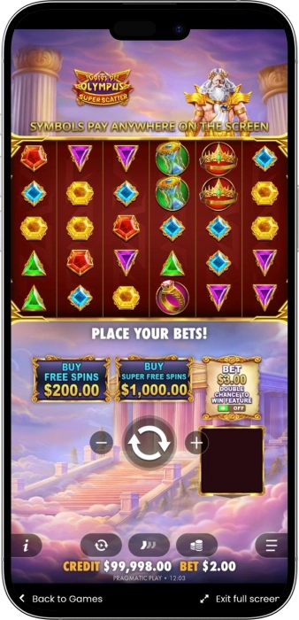
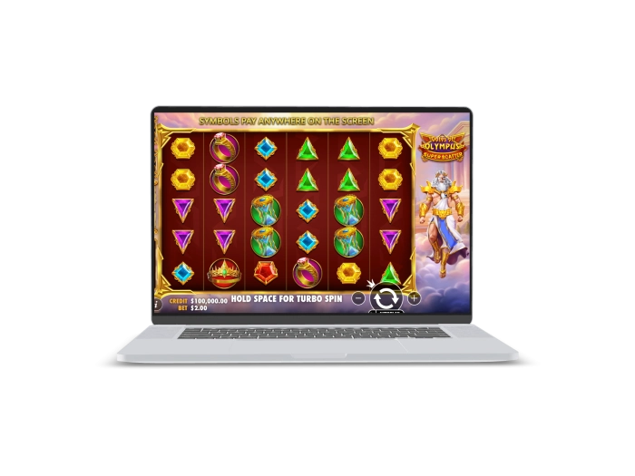

Exclusive welcome offer of
Exclusive welcome bonus of
Gates of Olympus Super Scatter — Up to 50,000x, Super Scatter 100x–50,000x and Multipliers up to 500x
Top Casinos
Bonus Details
Casino
Bonuses
Rate
Free Spins
More Info
Get
Advantages
-
Super Scatter unlocks up to 50,000x
-
Multipliers up to 500x boost wins
-
15 free spins fuel bonus potential
-
Cascades extend winning chains every spin
-
Scatter Pays rewards symbols anywhere displayed
-
High volatility suits players chasing peaks
-
Olympus theme makes gameplay feel epic
Gates of Olympus Super Scatter App



About Gates of Olympus Super Scatter
Gates of Olympus Super Scatter is a fast-paced Greek mythology slot that takes the familiar Olympus formula and pushes its bonus potential even further.
It uses a Scatter Pays system, so wins can form anywhere on the grid rather than on fixed paylines. The standout feature is the new Super Scatter symbol, which can award instant high-value payouts when the bonus is triggered. Cascades and random multipliers keep the base game lively, meaning one good spin can quickly grow into a much larger sequence.

The free spins round is especially valuable because multipliers keep building and can dramatically increase the final return. This is a strong choice for players who enjoy high-volatility gameplay and the possibility of landing a very big hit.
Gates of Olympus Super Scatter — slot review and features
Gates of Olympus Super Scatter Main Features and Game Profile
Gates of Olympus Super Scatter keeps the familiar identity of the Olympus series while putting much more focus on explosive bonus entry potential. The game runs on a 6x5 grid and uses a Scatter Pays format, which means wins are formed by landing 8 to 30 matching symbols anywhere on the screen. Cascades, random multipliers, free spins, and the new Super Scatter mechanic combine to create a much more aggressive payout profile. Overall, this is a high-volatility slot designed for players who enjoy large multipliers, powerful bonus rounds, and the chance to hit a standout win.
Main Characteristics
- • Provider: Pragmatic Play
- • Grid: 6 reels x 5 rows
- • Format: Scatter Pays
- • Winning rule: 8 to 30 matching symbols
- • Cascades: available
- • Random multipliers: up to 500x
- • Bonus round: 15 free spins from 4+ scatters
- • Super Scatter prizes: 100x, 500x, 5,000x, or 50,000x
- • Volatility: high
- • RTP: around 96.5%
- • Bet range: about 0.20 to 240 per spin
- • Ante Bet: adds 50% to the stake and improves free spin chances
- • Bonus Buy: available in some markets and casino versions
Where to Play Gates of Olympus Super Scatter
Gates of Olympus Super Scatter is usually available on major online platforms that work with providers such as Pragmatic Play. In most cases, the slot can be launched directly in a browser on desktop and mobile devices without extra installation. Many platforms offer both demo access and real-money play, which makes it easy to learn the mechanics before switching to real stakes. The game is most often found in licensed casino libraries that focus on modern high-volatility releases. When choosing where to play, it is worth paying attention to the full game version, available limits, and whether extra features are enabled.
Gates of Olympus Super Scatter Demo Mode
The demo mode in Gates of Olympus Super Scatter lets you explore the slot without using real money and learn its pacing in a relaxed way. It is a practical way to see how cascades, multipliers, free spins, and the Super Scatter mechanic actually behave during play. A demo session also helps you test different stake sizes, understand the feel of the volatility, and see how bonus-triggering moments develop. This makes the free version especially useful before moving into real-money play, because the slot is simple to start but much deeper once the bonus structure begins to matter.
Gates of Olympus Super Scatter Payout Table and Key Rewards
The most important payouts in this slot are tied not only to regular symbol values, but also to the bonus mechanics that can dramatically increase the final result of a spin. The table below highlights the main rewards and payout points that players usually focus on first.
| Symbol or Feature | Condition | Payout or Reward |
|---|---|---|
| Super Scatter | 1 symbol while triggering bonus | 100x stake |
| Super Scatter | 2 symbols while triggering bonus | 500x stake |
| Super Scatter | 3 symbols while triggering bonus | 5,000x stake |
| Super Scatter | 4 symbols while triggering bonus | 50,000x stake |
| Scatter | 4+ symbols | 15 free spins |
| Multiplier Orb | On a winning spin or tumble | 2x to 500x |
How Players Actually Win in Gates of Olympus Super Scatter
In real gameplay, the biggest wins in Gates of Olympus Super Scatter usually come from powerful bonus rounds rather than from isolated base-game spins. The base game often helps extend a session through cascades and occasional multipliers, but the most meaningful returns tend to appear when free spins arrive or when a strong Super Scatter entry changes the value of the trigger itself. In practical terms, many successful sessions follow a familiar pattern: a fairly quiet stretch, then a sudden burst of action where several multipliers land close together and transform an ordinary feature into the main source of profit. There is no guaranteed winning formula here, because the slot is highly volatile and often depends on one or two defining moments. The most effective approach is to use a comfortable stake, avoid chasing losses, and judge performance over a reasonable session rather than reacting emotionally to a few bad spins.
Software Providers
Gates of Olympus Super Scatter — bonuses, features, and how to play
Gates of Olympus Super Scatter Bonuses and Special Features
Gates of Olympus Super Scatter is built around bonus-driven momentum, which is exactly why its extra features define the entire experience. Even the base game can create excitement through cascades and random multipliers, but the true value of the slot appears when free spins begin or when the Super Scatter mechanic upgrades the trigger itself. This is not just a visual bonus package, but a layered system where several features can combine to create a far stronger outcome than a normal spin. Cascades keep the action alive, multipliers strengthen every winning moment, and the enhanced bonus entry can turn the trigger into a major reward on its own. For players who already enjoy the Olympus series, this version feels more aggressive, more feature-heavy, and much more focused on explosive upside. That combination is exactly what gives the slot its standout identity.
Free Spins in Gates of Olympus Super Scatter
- • Landing 4 or more scatter symbols awards 15 free spins. This is the main bonus feature, and each successful sequence inside it can be boosted by accumulating multipliers.
Super Scatter in Gates of Olympus Super Scatter
- • 1 Super Scatter on the bonus trigger pays 100x the stake. This immediately makes the entry far more valuable than a regular trigger.
- • 2 Super Scatters on the trigger pay 500x. That kind of entry can instantly turn the feature into a strong event.
- • 3 Super Scatters on the trigger pay 5,000x. This is rare, but already a major result in its own right.
- • 4 Super Scatters on the trigger pay 50,000x. This is the maximum win of the game and one of the biggest attractions of the slot.
Random Multipliers in Gates of Olympus Super Scatter
- • Multiplier symbols can appear in both the base game and free spins with values up to 500x. Even one orb can significantly raise the value of a cascade.
- • When several multipliers land together, their values are added. For example, 20x + 50x + 100x become a combined 170x boost.
Cascades in Gates of Olympus Super Scatter
- • After every win, the symbols disappear and new ones fall into place. This allows one paid spin to create several consecutive payouts.
- • Cascades are especially powerful during free spins, where one long chain can collect multipliers and sharply increase the final return.
Ante Bet in Gates of Olympus Super Scatter
- • Ante Bet increases the cost of the spin by 50% and improves the chance of triggering free spins. For example, a 1-coin stake becomes a 1.5-coin spin.
- • This option suits players who actively want more bonus attempts, but it also makes bankroll usage faster and more intense.
Bonus Buy in Gates of Olympus Super Scatter
- • In some markets and game versions, regular free spins can be bought for 100x the stake. This is a direct route to the main feature of the slot.
- • Some versions also offer Super Free Spins for 500x, where multipliers start from at least 10x. This option is aimed at players chasing the most extreme potential in the game.
Gates of Olympus Super Scatter Free Spins and Multipliers Table
Free spins and multipliers sit at the center of the payout potential in Gates of Olympus Super Scatter. This is where the slot becomes most dangerous and most exciting, because multipliers do not just appear randomly during the feature — they can build and keep strengthening each new winning sequence.
| Trigger or Event | What It Gives | Potential Impact |
|---|---|---|
| 4+ Scatters | 15 free spins | Standard bonus entry |
| Base Game Multiplier | 2x to 500x | Boosts the current win |
| Free Spins Multiplier | 2x to 500x | Adds to the running total |
| Multiple Orbs Together | Combined values | 20x + 50x = 70x |
| Super Free Spins | In some versions only | Multipliers start from 10x |
| 1 Super Scatter | 100x entry reward | Strong bonus trigger |
| 2 Super Scatters | 500x entry reward | Very strong trigger |
| 3 Super Scatters | 5,000x entry reward | Rare major hit |
| 4 Super Scatters | 50,000x entry reward | Maximum game payout |
How to Play Gates of Olympus Super Scatter
Gates of Olympus Super Scatter is easy to start because the basic rules are simple and the layout feels familiar to modern slot players. At the beginning, all you need to do is choose a stake, spin the reels, and watch for matching symbols anywhere on the grid. To play with more confidence, it helps to understand how cascades, multipliers, free spins, and the Super Scatter mechanic work together.
Step 1: Choose Your Stake
- • Set a comfortable bet before you begin. This matters even more here because the slot is high volatility and can produce uneven sessions.
Step 2: Start the Spin
- • Press spin and watch the 6x5 grid. A win is formed by landing 8 or more matching symbols anywhere on the screen.
Step 3: Watch the Cascades
- • After a winning hit, the symbols disappear and new ones fall into place. This means one paid spin can create several consecutive payouts.
Step 4: Track the Multipliers
- • Multipliers up to 500x can land at random and sharply improve the value of a winning sequence. In the base game they affect the current result, while in free spins they become part of the running total.
Step 5: Trigger Free Spins
- • Landing 4 or more scatters awards 15 free spins. This is the mode where the slot usually shows its strongest payout potential.
Step 6: Understand Super Scatter
- • If Super Scatter symbols appear on the bonus trigger, the entry itself becomes an instant reward. The more Super Scatters you land, the bigger the payout.
Step 7: Use Extra Options Carefully
- • You can use ante bet or bonus buy if those options are available in your version. They can increase action, but they also demand better bankroll control.
Gates of Olympus Super Scatter Tips for Smarter Play
To enjoy Gates of Olympus Super Scatter more comfortably, it helps to accept the true rhythm of the slot from the start. This is not a game that always pays often, but it can completely change a session with one powerful bonus round. The best results usually come not from rushing, but from using the right stake, staying patient, and understanding where the real value of the game is located.
Tip 1: Think in Sessions, Not in a Few Spins
- • Do not judge the slot after only 10 or 20 spins. Gates of Olympus Super Scatter often shows its true rhythm over longer stretches.
Tip 2: Match Your Bet to the Volatility
- • Use a stake that allows you to handle a longer dry spell. The more comfortable your bankroll is, the easier it is to play this bonus-driven slot well.
Tip 3: Learn the Demo First
- • Demo mode helps you understand how free spins feel, how cascades develop, and how sharply multipliers can change the payout picture.
Tip 4: Do Not Overrate the Base Game
- • Base hits are useful, but the real upside is usually tied to bonus play. That is where your expectations should mainly be focused.
Tip 5: Use Ante Bet with a Clear Purpose
- • This option increases the cost of each spin, but it also helps you chase free spins more actively. It works best for players who want a faster feature-hunting pace.
Tip 6: Do Not Expect One Bonus to Solve Everything
- • Even a good trigger does not guarantee a huge return. A calm mindset usually performs better than the belief that one feature must save the whole session.
Tip 7: Separate Luck from Discipline
- • Winning is random, but strong play comes from emotional control and stable bet sizing. That is what most often separates a solid session from a chaotic one.
Gates of Olympus Super Scatter Mistakes That Drain the Bankroll
In Gates of Olympus Super Scatter, bankrolls are usually lost not because of the slot itself, but because of poor decisions during the session. This game can stay quiet for a while and then suddenly explode, which makes emotional reactions especially dangerous. That is why it helps to understand in advance which mistakes most often ruin an otherwise manageable session.
Mistake 1: Starting with Stakes That Are Too High
- • Players speed up their spending and leave themselves no real distance to reach a meaningful bonus. In a high-volatility slot, this is one of the fastest ways to fail early.
Mistake 2: Trying to Win Back Losses Immediately
- • After a bad run, many players raise the stake in an attempt to recover quickly. In Gates of Olympus Super Scatter, this often only increases the downside faster.
Mistake 3: Misreading the Role of the Bonus
- • Some players expect the base game to generate most of the profit. In reality, the strongest upside usually comes from free spins, cascades, and multiplier-heavy moments.
Mistake 4: Turning on Ante Bet Without a Plan
- • The feature does improve the chance of free spins, but it also makes every spin more expensive. Used carelessly, it can drain the bankroll much faster than expected.
Mistake 5: Buying Bonuses Without Limits
- • Bonus Buy can be exciting, but several weak purchases in a row can quickly damage a bankroll. This is especially dangerous in a volatile game built around rare peaks.
Mistake 6: Skipping Demo Practice
- • Entering the slot without learning its pace often leads to unrealistic expectations and emotional decisions instead of informed play.
Mistake 7: Expecting Every Trigger to Be Huge
- • Even 15 free spins do not promise a massive result. When players expect every bonus to explode, they become more likely to react impulsively after an average outcome.
Frequently Asked Questions
A standard win starts from 8 matching symbols. The more matches you land, the higher the payout becomes.
In many versions, autoplay is available as a standard interface option. It is useful for smoother sessions when players do not want to trigger every spin manually.
A regular Scatter triggers the bonus round, while Super Scatter upgrades the bonus entry itself and can award a large instant payout. That is what makes this version feel much more aggressive than the original format.
Yes, the game usually supports a low entry bet, which is useful for learning the mechanics. It is a comfortable way to explore the slot without adding too much pressure.
It leans much more toward a risky style because of its high volatility. It suits players who are willing to wait for rarer but potentially much stronger outcomes.
The biggest difference is the Super Scatter mechanic and the much higher payout ceiling. Because of that, the game feels more bonus-heavy, more explosive, and more focused on large multiplier moments.